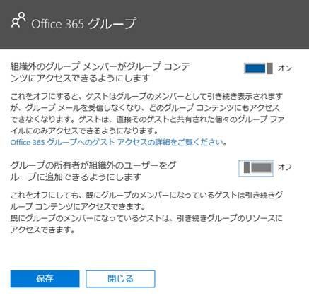
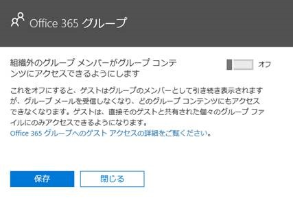

こんにちは。いつも Office 365 を利用いただきまして、ありがとうございます。
今回は、Office 365 グループの制御方法について、ご紹介いたします。
Offce365 グループとは
Office 365 グループは、社内外のメンバーと予定を共有したり、SharePoint Online 上のドキュメントを共有したり、共同作業を行うのに大変便利な機能です。
Office 365 グループの概要
https://support.office.com/ja-jp/article/b565caa1-5c40-40ef-9915-60fdb2d97fa2
※Office 365 グループを使用するには、Exchange Online（Plan 1 以上）のサービスを含むサブスクリプションがテナントにて有効になっている必要があります。
Office 365 グループに関する設定の既定値は下記の通りです。
a. 一般ユーザーであっても、Offce365 グループを作成可能
b. 一般ユーザーであっても、グループ保有者となり Offce365 グループにゲストユーザーを追加可能
c. ゲストユーザーは、招待された Office 365 グループのリソースにアクセス可能
便利だからこその懸念点
一般ユーザーの自由度が高いため、Office 365 のテナント管理者（情報システム部門など）としては、下記のような点を懸念するというお問い合わせを多くいただきます。
a. テナント管理者が知らないところで、Office 365 グループが作成される
> Office 365 グループは、Outlook / Teams 等から簡単に作成することが可能です。
ユーザーが作成したグループは、使用が終了しても削除されずに残るため、テナント管理者が把握していないグループが増えることになります。
※定期的に棚卸している環境であれば問題ないと思います。
b. テナント管理者が知らないところで、ゲストユーザーが追加される
> Office 365 グループにゲストユーザーを追加・招待しますと、テナント管理者が把握していない下記のようなゲストユーザーが追加されます。
例：testuser_outlook.jp#EXT#@contoso.onmicrosoft.com
※こちらも、定期的に棚卸している環境であれば問題ないと思います。
c. テナント管理者が知らないところで追加されたゲストユーザーが、当該 Office 365 テナントのリソースにアクセス可能となる
> ゲストユーザーが社内のリソースに自由にアクセス可能となることをセキュリティの問題を懸念されるお客様が多くいらっしゃいます。
各シナリオの制御方法
それぞれのシナリオについて、制御方法をご案内いたします。
各作業を行うには、Azure AD PowerShell V2 Preview のバージョン 2.0.0.137 以上をインストールする必要があります。
公開情報の中にインストール手順も記載していますので、合わせてご確認ください。
a. Office 365 グループの作成を制御する
テナント全体で Office 365 グループの作成ができないように設定する方法は、下記の通りです。
Office 365 グループを作成できるユーザーを管理します。
https://support.office.com/ja-jp/article/4c46c8cb-17d0-44b5-9776-005fced8e618
この設定を行いますと、(Get-AzureADDirectorySetting).values コマンド結果で EnableGroupCreation：False となります。
コマンド実行例：
1 | (Get-AzureADDirectorySetting).Values |
特定のセキュリティ グループに所属しているユーザーのみ、Office 365 グループを作成できるように設定することも可能です。
この設定を行いますと、(Get-AzureADDirectorySetting).values コマンド結果で EnableGroupCreation：False / GroupCreationAllowedGroupId：＜対象グループの objected＞となります。
※ 特定のグループのみ Office 365 グループの作成を許可する場合、作業者の全体管理者および対象グループに所属しているユーザーに対して Azure AD Premium P1 以上のライセンスが必要です。
コマンド実行例：
1 | (Get-AzureADDirectorySetting).Values |
SharePoint / Yammer チームの Blog でも詳細な手順を記載していますので、合わせてご参照ください。
SharePoint Online/OneDrive for Business で Office 365 グループの作成を制限する
https://blogs.technet.microsoft.com/sharepoint_support/2017/06/02/spo-odb-restrict-365group/
Yammer グループと Office 365 グループの統合について (V2)
https://blogs.technet.microsoft.com/sharepoint_support/2017/04/06/manage-yammer-suite-connected-office-365-group-creation-v2/
b. Offce365 グループへのゲストユーザー追加を制御する
Offce365 グループの所有者がゲストユーザー追加できないようにするには、[Office 365 管理センター] – [サービスとアドイン] – [Office 365 グループ] にて下記のオプションを「オフ」に設定します。
{kind=link}

この設定を行いますと、(Get-AzureADDirectorySetting).values コマンド結果で AllowToAddGuests：False となります。
コマンド実行例：
1 | (Get-AzureADDirectorySetting).Values |
特定のグループのみゲストユーザーの追加を許可 / 拒否する方法は、下記の通りです。
Office 365 グループのゲスト アクセス
https://support.office.com/ja-jp/article/bfc7a840-868f-4fd6-a390-f347bf51aff6#PickTab=管理
PowerShell を使用してゲスト アクセスを制御する
特定のグループからのゲスト ユーザーを許可またはブロックする
※本機能の使用するには、テナント全体では Office 365 グループへのゲストユーザー追加を有効にし、特定のグループのみゲストユーザーの追加を拒否する設定とします。
・テナント全体
AllowToAddGuests：True
・特定グループ
AllowToAddGuests：False
c. ゲストユーザーによるリソースのアクセスを制御する
ゲストユーザーが Office 365 グループのリソースにアクセスできないようにするには、[Office 365 管理センター] – [サービスとアドイン] – [Office 365 グループ] にて下記のオプションを「オフ」に設定します。
{kind=link}

この設定を行いますと、(Get-AzureADDirectorySetting).values コマンド結果で AllowGuestsToAccessGroups：False となります。
コマンド実行例：
1 | (Get-AzureADDirectorySetting).Values |
今後も Office 365 サービスに関する有益な情報を発信してまいりますので、弊社サポート ブログをよろしくお願いいたします。